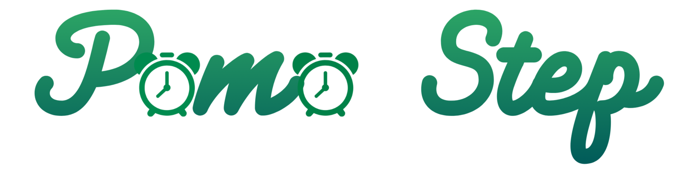

Statistik
Kembali ke Timer
0
Sesi Fokus (Hari Ini)
0
Total Active Break
0
Total Menit Fokus
0
Weekly Streak (hari)
Daftar Tugas
Tugas Selesai:
0
/
0
Capaian Produktivitas
Rata-rata menit / sesi (hari ini)
0
Total sesi fokus (hari ini)
0
Semakin konsisten, streak-mu akan meningkat!
Komposisi Fokus vs Break
Progress Tugas
Reset Semua Statistik
Data disimpan di browser Anda (localStorage)